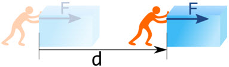
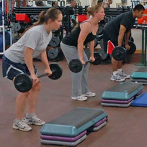
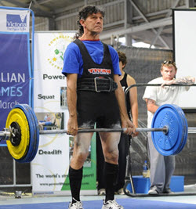
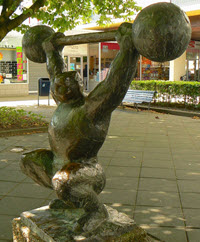
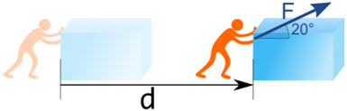
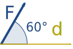
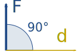
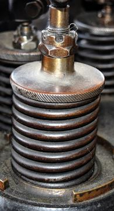
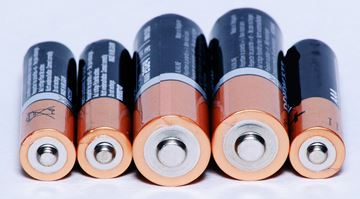
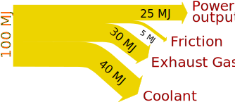

Energy and Work
Work is done when force moves through a distance.

If no movement, then no work!

These people are doing work, because they are lifting weights

This guy did work to get the weights up,
but right now he is not doing any work as the weights aren't moving

This guy is also not doing any work
This tractor is doing work as it pulls the hay bales along.
Same Direction!
The force and movement are measured in the same direction.
Work = Force × Distance × cos θ
Where θ is the angle between the force and the direction of motion.
Example: John pushes a box 3 m straight forward using 200 N of force. But his push is a little upwards by 20°.

Start with:
Work = Force × Distance × cos θ
Put in the values we know:
Work = 200 N × 3 m × cos 20°
Work = 200 N × 3 m × 0.9397...
Work = 564 N m (to nearest N m)
1 N m is 1 Joule (J) the preferred unit for work and energy (more on this later):
Work = 564 J
(Without cos θ, the wrong value would be 600 J)
Here are some other angles:
| cos(0°)=1 | cos(60°)=0.5 | cos(90°)=0 | ||
|  |
 |
|||
| W = Fd | W = Fd × 0.5 | W = 0 |
So remember:
- Without movement there is no work
- Force and movement in the same direction
- Work = Force × Distance × cos θ
Energy
Energy is the capacity to do work.
It is like energy is stored up work.
- When work is done by something it loses energy
- When work is done on something it gains energy
Energy can be in many forms:

A coiled spring has elastic energy.

Batteries store chemical energy.
They convert that to electrical energy,
which we can use to do work.
Fuel also contains chemical energy. An engine can turn that fuel (with oxygen) into work, making your car go!

A hammer has mechanical energy:
- when raised up it has potential energy (the energy of position)
- when falling down it has kinetic energy (the energy of motion)
Energy goes from one storage to another, or goes to heat:

Heat is a type of energy, too. In fact the total amount of energy stays the same:
Energy can't be created or destroyed.
This is called Conservation of Energy: energy just gets transformed and the total stays constant.
Energy is lost to a system when it leaves it. A battery loses energy when it powers a light. Our bodies lose heat all the time.
And when we say "energy is lost as heat" we really mean the energy is dissipated (spread out) into the environment, it is not gone from the Universe.
Sankey Diagrams
A "Sankey Diagram" shows where the energy goes. The width of the arrow shows how much goes where.

Here is a Sankey Diagram for a car's gasoline engine:

Note: "MJ" is Megajoule (Million Joules). Add them up to make sure the totals match!
The Joule
The basic unit of energy and work is the Joule (J):
1 Joule is the work done by 1 Newton moving 1 meter
1 J = 1 N × 1 m
The Joule has the units N m, or kg m2/s2 (because a Newton is kg m/s2)
Only force and movement in the same direction count, so a more accurate description is:
1 J is the work done to an object when a force of 1 N acts on that object in the direction of its motion through a distance of 1 meter.

Example: How much energy is needed to lift an 0.1 kg apple up 1 meter?

To hold a 0.1 kg apple against gravity needs 1 Newton of force:
F = mg
F = 0.1 kg × 9.8 m/s2
F ≈ 1 N
But holding an apple is not work, the apple needs to move!
So, raising it using 1 N for 1 m (both in same direction!) gives:
Work = 1 N × 1 m × cos 0°
= 1 J
How Much?
One joule is about:

- the energy needed to lift an 0.1 kg apple up 1 meter
- The energy released when the apple falls back down again
- The heat needed to raise a single drop of water by 5° C
- 1 watt of electricity for 1 second
And:
- An LED light uses about 3 J every second
- A human at rest releases about 60 J of heat every second
A kilojoule (kJ) is 1000 J:
- A fan heater releases about 2 kJ of heat every second
- to heat the water for a cup of coffee needs 80 kJ
A Megajoule (MJ) is 1 million J:
- A 2500 kg car going at highway speed has 1 MJ of energy
- A big TV uses about 1 MJ of electricity every hour
- One kW h (kilowatt hour) of electricity is 3.6 MJ
- A fan heater releases about 8 MJ of heat every hour
A Gigajoule (GJ) is 1 billion J:
- The solar energy falling on a roof is about 1 GJ to 5 GJ every day
- A person uses about 20 GJ in their home every year
Efficiency
Efficiency is how much of the energy is useful as a percent of the total energy.
Efficiency = Useful Energy Total Energy as a percentage
Example: For every 100 MJ (Megajoule) of energy a gasoline engine uses, only 25 MJ goes to driving it forward.
Efficiency = 25 MJ 100 MJ = 25%
Summary
- Work is force times distance (in the same direction!)
- W = F d cos θ
- Energy is the ability to do work
- Energy goes from one storage to another, or goes to heat
- Energy can't be created or destroyed (Conservation of Energy)
- The basic unit of energy is 1 Joule (J)
- 1 J = 1 N m